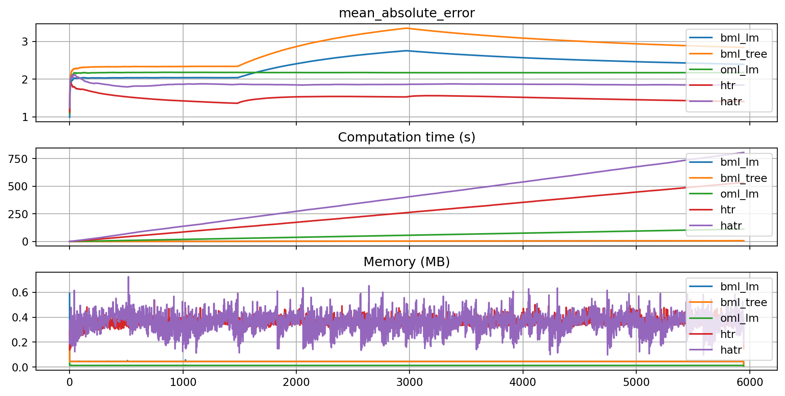
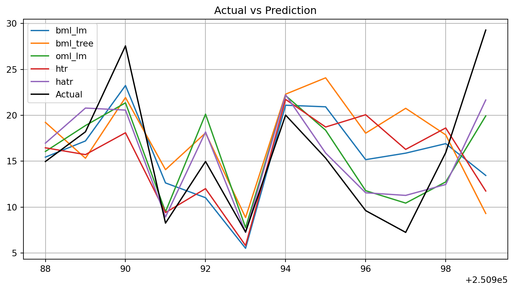

import numpy as np
import pandas as pd
from spotRiver.evaluation.eval_oml import eval_oml_iter_progressive, plot_oml_iter_progressive
from spotRiver.evaluation.eval_bml import eval_bml_horizon, eval_bml_landmark, eval_bml_window, eval_oml_horizon, plot_bml_oml_horizon_predictions, plot_bml_oml_horizon_metrics
from spotRiver.utils.data_conversion import convert_to_df
from river import metrics as river_metrics, compose, feature_extraction, linear_model, preprocessing, stats
from river import stream as river_stream
from river import preprocessing as river_preprocessing
from river.datasets import synth
from river.tree import HoeffdingTreeRegressor, HoeffdingAdaptiveTreeRegressor
from sklearn.tree import DecisionTreeRegressor
from sklearn.linear_model import LinearRegression
from sklearn.datasets import make_regression
from sklearn import preprocessing as preprocessing_sklearn
from sklearn import tree as sklearn_tree
from sklearn.pipeline import Pipeline
from sklearn.preprocessing import MinMaxScaler
from sklearn.pipeline import make_pipeline
from sklearn.metrics import mean_absolute_error
import os
if not os.path.exists('./figures'):
os.makedirs('./figures')spotRiver Examples
Friedman Drift
Consider Global Recurring Abrupt Drift:
def _global_recurring_abrupt_gen(self, x, index: int):
if index < self._change_point1 or index >= self._change_point2:
# The initial concept is recurring
return (
10 * math.sin(math.pi * x[0] * x[1]) + 20 * (x[2] - 0.5) ** 2 + 10 * x[3] + 5 * x[4]
)
else:
# Drift: the positions of the features are swapped
return (
10 * math.sin(math.pi * x[3] * x[5]) + 20 * (x[1] - 0.5) ** 2 + 10 * x[0] + 5 * x[2]
)Metric and Horizon
metric = mean_absolute_error
horizon = 7*24
k = 10
n_total = int(k*100_000)
p_1 = int(k*25_000)
p_2 = int(k*50_000)
position=(p_1, p_2)
n_train = 1_000
a = n_train + p_1 - 12
b = a + 12Data: Friedman-Drift
dataset = synth.FriedmanDrift(
drift_type='gra',
position=position,
seed=123
)
data_dict = {key: [] for key in list(dataset.take(1))[0][0].keys()}
data_dict["y"] = []
for x, y in dataset.take(n_total):
for key, value in x.items():
data_dict[key].append(value)
data_dict["y"].append(y)
df = pd.DataFrame(data_dict)
# Add column names x1 until x10 to the first 10 columns of the dataframe and the column name y to the last column
df.columns = [f"x{i}" for i in range(1, 11)] + ["y"]train = df[:n_train]
test = df[n_train:]
target_column = "y"BML: Linear Regression
bml_lm = LinearRegression()
# Add a MinMaxScaler to the pipeline
bml_lm = make_pipeline(MinMaxScaler(), bml_lm)df_eval_bml_lm, df_true_bml_lm = eval_bml_horizon(model = bml_lm,
train = train,
test = test,
target_column=target_column,
horizon=horizon, include_remainder=True, metric=metric)BML: Decision Tree Regressor
bml_tree = DecisionTreeRegressor(random_state=0)
# Add a MinMaxScaler to the pipeline
bml_tree = make_pipeline(MinMaxScaler(), bml_tree)
df_eval_bml_tree, df_true_bml_tree = eval_bml_horizon(model = bml_tree,
train = train,
test = test,
target_column=target_column,
horizon=horizon, include_remainder=True, metric=metric)OML: Linear Regression
oml_lm = preprocessing.StandardScaler()
oml_lm |= linear_model.LinearRegression()
df_eval_oml_lm, df_true_oml_lm = eval_oml_horizon(model=oml_lm, train=train, test=test, target_column="y", horizon=horizon, metric=metric)OML: HTR
htr_model = (preprocessing.StandardScaler() | HoeffdingTreeRegressor())
df_eval_htr, df_true_htr = eval_oml_horizon(model=htr_model, train=train, test=test, target_column="y", horizon=horizon, oml_grace_period=100, metric=metric)OML: HATR
hatr_model = (preprocessing.StandardScaler() | HoeffdingAdaptiveTreeRegressor())
df_eval_hatr, df_true_hatr = eval_oml_horizon(model=hatr_model, train=train, test=test, target_column="y", horizon=horizon, oml_grace_period=100,metric=metric)Plot
df_labels=["bml_lm", "bml_tree", "oml_lm", "htr", "hatr"]
plot_bml_oml_horizon_metrics(df_eval = [df_eval_bml_lm, df_eval_bml_tree, df_eval_oml_lm, df_eval_htr, df_eval_hatr], log_y=False, log_x=False, df_labels=df_labels, cumulative=True, metric=metric, figsize=(10, 5), filename="./figures/ch09_friedman_1_000_000_metrics.pdf")
plot_bml_oml_horizon_predictions(df_true = [df_true_bml_lm[a:b], df_true_bml_tree[a:b], df_true_oml_lm[a:b], df_true_htr[a:b], df_true_hatr[a:b]], target_column="y", df_labels=df_labels, filename="./figures/ch09_friedman_1_000_000_predictions.pdf")

Further Examples
Examples can be found in the Hyperparameter Tuning Cookbook, e.g., Documentation of the Sequential Parameter Optimization.